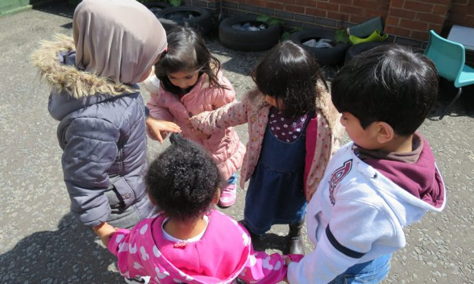

Choosing the right preschool for your child can feel overwhelming. You want a place where your little one can thrive, learn, and feel safe. That’s why understanding the EYFS at Lemon Tree Preschool is so important. The Early Years Foundation Stage, or EYFS, sets the national standards for early education in the UK, guiding how children learn through play and structured activities.
This guide will explain how the EYFS works, what children experience daily, and how Lemon Tree Preschool applies this framework to support every child’s development. Learn more about starting nursery at Lemon Tree Preschool to see how they welcome new children.
What Is the EYFS Curriculum and Why Does It Matter in Early Education
At its core, the EYFS is the framework that shapes early childhood development in the UK. It covers children from birth to five years and ensures they receive a balanced, nurturing education before starting school. The framework focuses on five key outcomes: being healthy, staying safe, enjoying and achieving, making a positive contribution, and achieving economic well-being.
For parents, understanding the EYFS is essential because it shows exactly how preschools like Lemon Tree support learning and development through structured play, observation, and skill-building activities. Now that we know what the EYFS entails, let’s explore how Lemon Tree Preschool puts these principles into practice for its children.
How the EYFS at Lemon Tree Preschool Supports Child Development
Lemon Tree Preschool integrates the EYFS framework into every part of the day. Teachers carefully plan activities that help children explore, communicate, and develop social skills. For example, a morning story session might be followed by outdoor play where children experiment with counting, building, or imaginative games.
Play is central, but adult-led guidance ensures that children also achieve specific learning outcomes. Observations and gentle guidance help children develop confidence, problem-solving skills, and early literacy abilities. By combining structured learning with child-led exploration, EYFS learning at Lemon Tree Preschool holistically supports each child. You can read about the staff and key persons who guide these learning experiences.
The Seven Areas of Learning in the Early Years Curriculum UK
The EYFS divides learning into seven areas to give a comprehensive approach:
- Communication and Language
- Physical Development
- Personal, Social, and Emotional Development
- Literacy
- Mathematics
- Understanding the World
- Expressive Arts and Design
These are split into prime and specific areas, which together cover the full spectrum of early education skills. Understanding these areas helps parents see how their child will grow academically, socially, and emotionally.
Prime Areas of Learning: Building Strong Foundations
The prime area communication and language, physical development, and personal, social, and emotional development are considered the foundation for all other learning. At Lemon Tree, teachers encourage children to express themselves verbally, cooperate with friends, and develop fine and gross motor skills.
For instance, during outdoor activities, children might practise balancing, climbing, or using scissors under supervision, which develops coordination and confidence simultaneously. You can learn more about their health and safety approach, which supports these activities safely.
Specific Areas of Learning: Encouraging Curiosity and Skills
The specific areas are built on these foundations. Literacy and mathematics introduce basic letters, numbers, and problem-solving skills. Understanding the world helps children explore science, nature, and technology. Expressive arts and design allow creativity through music, painting, and role-play.
For example, a child might create a small garden in class, learning about plants, patterns, and sequencing while practising counting seeds and drawing observations. Activities like this show how EYFS learning in preschool is both practical and fun. You can also explore the gallery to see these learning activities in action.
A Typical Day Following the EYFS at Lemon Tree Preschool
Parents often ask, “What is a typical EYFS day like?” At Lemon Tree, mornings usually begin with free play, followed by guided learning sessions. Snack time and group activities encourage social skills, while outdoor play fosters physical development.
Afternoons might focus on creative arts or storytelling. Each day balances child-led exploration with adult-guided learning, ensuring children meet EYFS learning goals while enjoying the process. Check the daily routine page for more details about what a day looks like for children.
Learning Through Play: How EYFS Is Delivered in Practice
Play-based learning is at the heart of the EYFS teaching method. Children learn best when they are engaged and enjoying themselves. At Lemon Tree, play is both structured and flexible. Adult-led activities introduce new concepts, while child-initiated play encourages creativity, problem-solving, and social interaction.
For instance, building a tower with blocks can teach counting, balance, and collaboration. Meanwhile, imaginative play with costumes or props encourages storytelling and communication. See how Lemon Tree embraces diversity in learning to support these activities.
Assessment and Progress Tracking Under the EYFS Framework
Teachers at Lemon Tree track each child’s progress through careful observation and regular assessments. Learning journals, photos, and developmental checklists capture milestones in social, emotional, cognitive, and physical skills. Parents receive regular updates, giving clear insights into their child’s journey.
These assessments are not tests but tools to ensure each child is developing at their own pace. According to the Govt. UK EYFS guidance, documenting progress is a key part of supporting early learning and identifying areas where additional support may be helpful. Parents can also review the policy statements that govern these practices.
How Lemon Tree Preschool Personalises the EYFS for Every Child
Every child is unique, and Lemon Tree recognises this. Teachers adapt activities to suit different learning styles and developmental stages. Support may include additional help with communication, emotional regulation, or numeracy.
For example, a shy child may receive one-to-one encouragement to join group activities, while a confident child is offered leadership roles during play. This personalisation helps children feel valued, supported, and motivated to explore new challenges. You can find information about sessions and fees for each child’s plan.
Preparing Children for School Through the EYFS Curriculum
One of the most important outcomes of EYFS is school readiness. Children at Lemon Tree Preschool develop social skills, independence, and problem-solving abilities, which give them a head start in primary school.
Through daily routines, guided learning, and play, children practise sharing, listening, and following instructions. Parents often notice their children transitioning smoothly into school because they are already familiar with group learning, classroom routines, and basic academic concepts. Learn more about school transitions at Lemon Tree.
EYFS at Lemon Tree Preschool vs Other Early Years Settings
While most UK preschools follow the EYFS, Lemon Tree goes further in combining personalised learning with a structured curriculum.
| Feature | Lemon Tree Preschool | Typical UK Preschool |
| Child-led learning | Strong focus, daily | Varies |
| Play-based activities | Integrated into all lessons | Often separate |
| Parent communication | Weekly updates & meetings | Monthly or less |
| EYFS alignment | Fully structured & monitored | Meets minimum standards |
This comparison shows how Lemon Tree ensures children meet EYFS standards while enjoying a supportive and creative environment.
How Parents Are Involved in the EYFS Learning Journey
Parent engagement is crucial. Lemon Tree provides workshops, feedback sessions, and weekly reports, creating a strong partnership. This involvement helps parents understand EYFS learning areas and see progress firsthand.
For example, parents can observe how their child interacts during group activities, or learn strategies to support learning at home, reinforcing skills and confidence. You can also visit the feedback page to see what parents say about their experience.
Takeaway
Understanding the EYFS at Lemon Tree Preschool helps parents make informed choices about early education. By combining play-based learning with structured activities, personalised support, and strong parent partnerships, children develop the skills, confidence, and curiosity they need for school and beyond. Explore registering your child to get started on this exciting journey.
FAQs
1. At what age does the EYFS curriculum apply at Lemon Tree Preschool?
EYFS covers children from birth to five, but at Lemon Tree, the focus is on ages 2–5, preparing children for school.
2. How is the EYFS different from traditional teaching methods?
EYFS emphasises play-based, child-led learning rather than formal lessons, making learning more natural and engaging.
3. How do I know my child is progressing under the EYFS framework?
Teachers provide regular updates, observations, and learning journals to track progress in all learning areas.
4. Is the EYFS curriculum the same in all UK preschools?
All preschools must meet EYFS standards, but the approach, daily routines, and personalisation can vary significantly.
5. How does Lemon Tree Preschool support children who learn at different paces?
Through individualised plans, one-to-one guidance, and differentiated activities, every child receives support tailored to their needs.